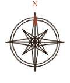

Estudo de um trem de engrenagens com 24, 16 e 10 dentes. A roda do meio dá uma
volta e meia a cada volta da maior.
fol. 2r
O Inventor
Meu nome é Thiago, tenho 18 anos e estou no segundo período de Ciência da
Computação na PUC Minas.
Meu objetivo profissional é me graduar em Computação, posteriormente realizar mestrado em Engenharia
Biomédica, Física Médica ou Modelagem Computacional. Me efetivar em um mercado onde vou unir as áreas as quais mais gosto
Pratico natação pela AAAE PUC, a Atlética de Engenharia e Arquitetura, faço musculação e tenho experiência com
handebol. Gosto muito de desenhar e criar personagens novos, pois é assim que alimento a minha criatividade. No meu tempo livre, escrevo histórias
e crio mundos onde dou vida aos personagens.
Curso
Ciência da Computação
Período
2º
Instituição
PUC Minas
Cidade
Belo Horizonte, MG
Ferramentas do ofício
C
C++
Java
JavaScript
HTML e CSS
Arduino
Git e GitHub
Python, aprendendo
fol. 3r
Vivências
O que venho aprendendo na prática, dentro e fora da sala de aula.
2026 – atual
Desenvolvimento web
PUC Minas e projetos pessoais
Desenvolvimento de telas com HTML, CSS e JavaScript e integração com back-end para
deixar as páginas dinâmicas. Aprendizado ainda em consolidação, colocado em prática em alguns projetos em andamento.
1º e 2º períodos · 2026
Lógica de programação
PUC Minas · Algoritmos e Estruturas de Dados
Construindo lógica de programação com algoritmos e estruturas de dados em C e
Java.
1º período · 2026
Prototipagem com Arduino
PUC Minas · Trabalho Interdisciplinar
Criação de protótipos interativos com Arduino, sensores e displays, do circuito no
Tinkercad ao código em C++.
fol. 4
Meus Estudos
Algumas de minhas invenções, vindas da curiosidade e da criatividade.
fol. 4r
Máquinas
Eletrônica e Arduino, feitos no Trabalho Interdisciplinar.
fol. 4v
Estudos Anatômicos
Onde a computação encontra a saúde, a área em que quero trabalhar.
Próximos estudos
Vitrum. Simular o fluxo de sangue numa artéria e a onda de pressão
gerada a cada batida do coração.
Sentinela. Usar algoritmos e física para prever doenças ligadas ao
sangue, à pressão e às veias.
Tomografia. Reconstruir o interior de um objeto a partir da absorção
de raio X em cada ângulo.
fol. 5r
Gabinete de Curiosidades
No Renascimento, os colecionadores guardavam ossos, instrumentos,
mapas e máquinas em armários de maravilhas. Este é o meu: histórias de onde a engenharia encontra a medicina.
Toque numa carta para virá-la.
Equações
As equações que mais acho fascinante e interessante, e, onde a matemática, a física
e a computação viram ferramentas para a medicina. Toque numa equação para ver o que ela significa.

fol. 5v
A Rota do Inventor
Todo inventor precisa de um mapa. Este é o caminho que quero
percorrer, da computação até as máquinas que cuidam de pessoas.
Você está aqui
Ciência da Computação
Graduação na PUC Minas, em Belo Horizonte.
Primeiros estudos em saúde
Primeiros projetos que trabalham física e algoritmos aplicados ao corpo.
Mestrado
Engenharia Biomédica, Física Médica ou Modelagem Computacional.
Destino
Projetar e programar máquinas para a saúde.
fol. 6r
Pergaminhos
Meus repositórios públicos no GitHub.
AeroHub
Simulador de voo com Arduino, projeto final de Trabalho Interdisciplinar.
Obras-primas em domínio público do Metropolitan Museum of Art, de
Nova York. Escolha um pintor para ver as obras.
fol. 7v
A Obra Favorita
O escritor deste códice possui uma obra a qual julga sua favorita.
A Noite EstreladaVincent van Gogh, 1889Óleo sobre tela · Museum of Modern Art (MoMA), Nova YorkPintada em Saint-Rémy-de-Provence, mostra a vista da janela
do quarto de Van Gogh no asilo, com uma vila que ele imaginou.
fol. 8r
Correspondência
Caro leitor,
obrigado por folhear este caderno. Para ver meus projetos ou falar comigo, me
encontre no GitHub ou me mande uma mensagem.